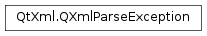

QXmlParseException¶
Synopsis¶
Functions¶
- def
columnNumber() - def
lineNumber() - def
message() - def
publicId() - def
systemId()
Detailed Description¶
The
PySide2.QtXml.QXmlParseExceptionclass is used to report errors with thePySide2.QtXml.QXmlErrorHandlerinterface.The XML subsystem constructs an instance of this class when it detects an error. You can retrieve the place where the error occurred using
PySide2.QtXml.QXmlParseException.systemId(),PySide2.QtXml.QXmlParseException.publicId(),PySide2.QtXml.QXmlParseException.lineNumber()andPySide2.QtXml.QXmlParseException.columnNumber(), along with the errorPySide2.QtXml.QXmlParseException.message(). The possible error messages are:
- “no error occurred”
- “error triggered by consumer”
- “unexpected end of file”
- “more than one document type definition”
- “error occurred while parsing element”
- “tag mismatch”
- “error occurred while parsing content”
- “unexpected character”
- “invalid name for processing instruction”
- “version expected while reading the XML declaration”
- “wrong value for standalone declaration”
- “encoding declaration or standalone declaration expected while reading the XML declaration”
- “standalone declaration expected while reading the XML declaration”
- “error occurred while parsing document type definition”
- “letter is expected”
- “error occurred while parsing comment”
- “error occurred while parsing reference”
- “internal general entity reference not allowed in DTD”
- “external parsed general entity reference not allowed in attribute value”
- “external parsed general entity reference not allowed in DTD”
- “unparsed entity reference n wrong context”
- “recursive entities”
- “error in the text declaration of an external entity”
Note that, if you want to display these error messages to your application’s users, they will be displayed in English unless they are explicitly translated.
-
class
PySide2.QtXml.QXmlParseException([name=""[, c=-1[, l=-1[, p=""[, s=""]]]]])¶ -
class
PySide2.QtXml.QXmlParseException(other) Parameters: - other –
PySide2.QtXml.QXmlParseException - s – unicode
- p – unicode
- name – unicode
- c –
PySide2.QtCore.int - l –
PySide2.QtCore.int
Constructs a parse exception with the error string
namefor columncand linelfor the public identifierpand the system identifiers.Creates a copy of
other.- other –
-
PySide2.QtXml.QXmlParseException.columnNumber()¶ Return type: PySide2.QtCore.intReturns the column number where the error occurred.
-
PySide2.QtXml.QXmlParseException.lineNumber()¶ Return type: PySide2.QtCore.intReturns the line number where the error occurred.
-
PySide2.QtXml.QXmlParseException.message()¶ Return type: unicode Returns the error message.
-
PySide2.QtXml.QXmlParseException.publicId()¶ Return type: unicode Returns the public identifier where the error occurred.
-
PySide2.QtXml.QXmlParseException.systemId()¶ Return type: unicode Returns the system identifier where the error occurred.
© 2018 The Qt Company Ltd. Documentation contributions included herein are the copyrights of their respective owners. The documentation provided herein is licensed under the terms of the GNU Free Documentation License version 1.3 as published by the Free Software Foundation. Qt and respective logos are trademarks of The Qt Company Ltd. in Finland and/or other countries worldwide. All other trademarks are property of their respective owners.